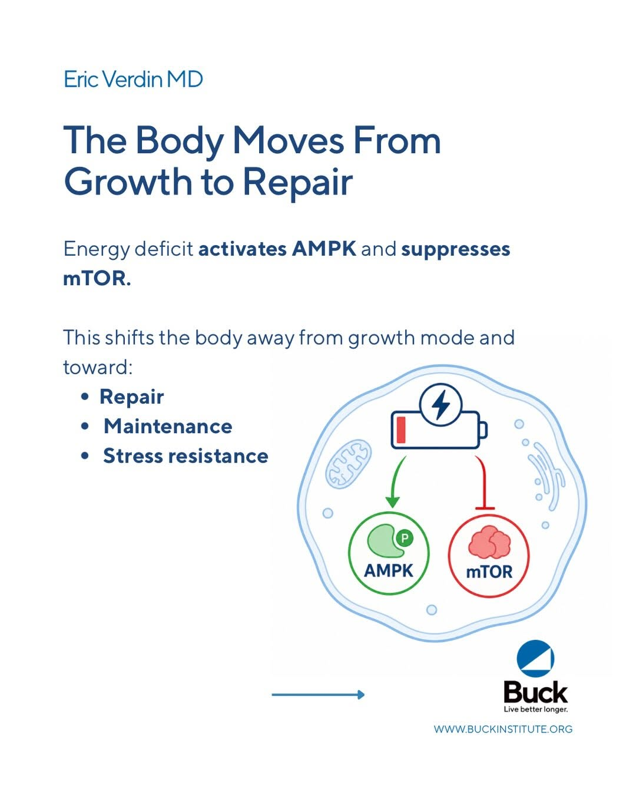
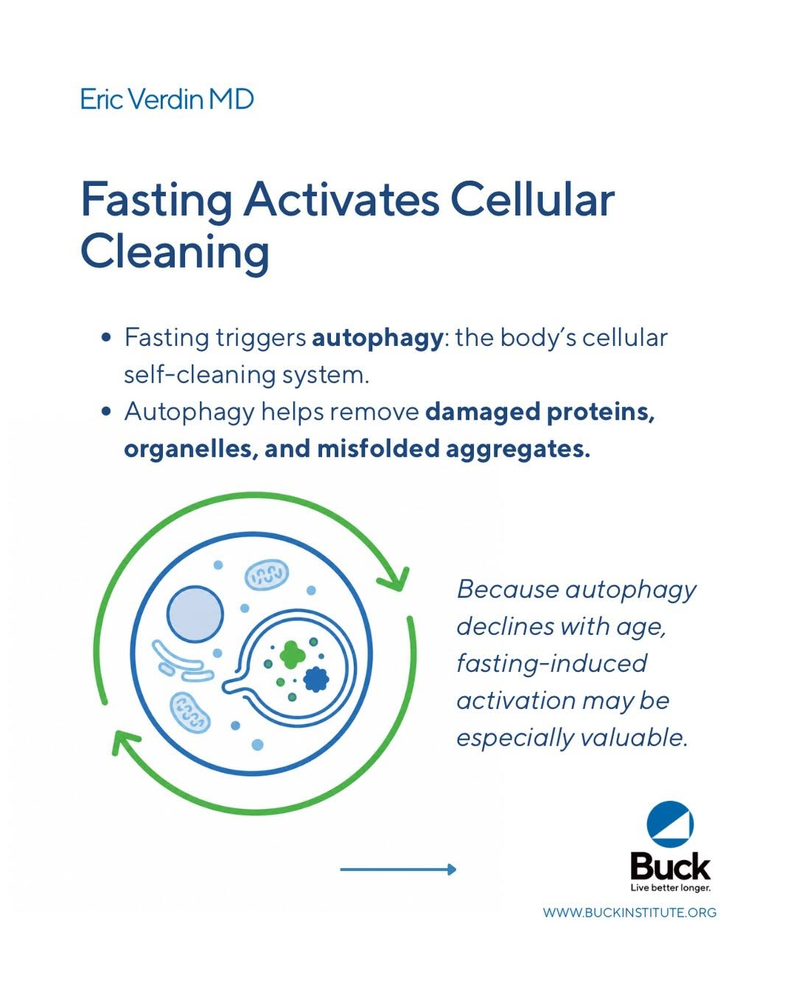
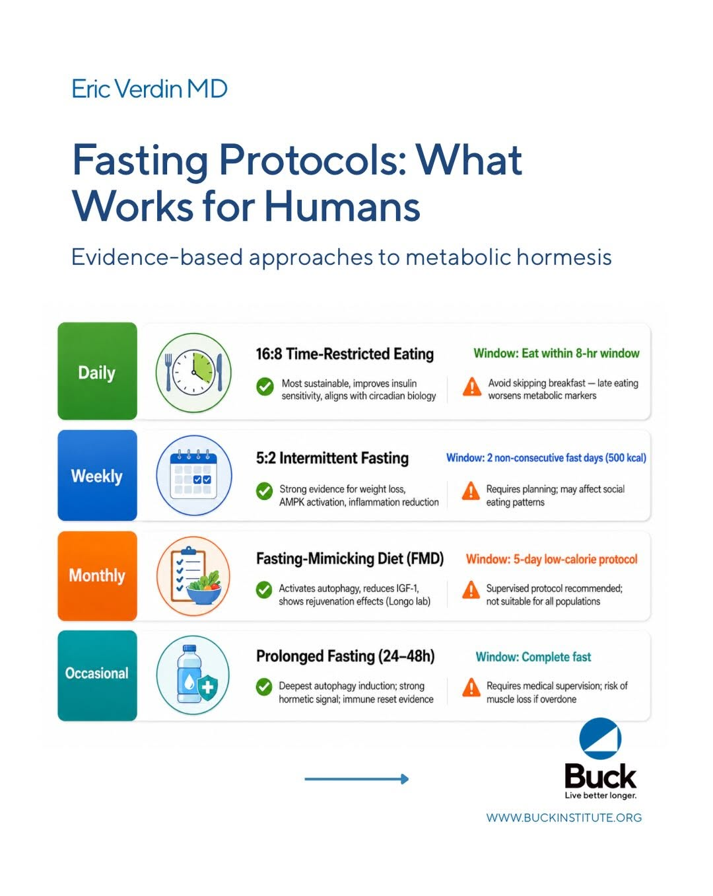
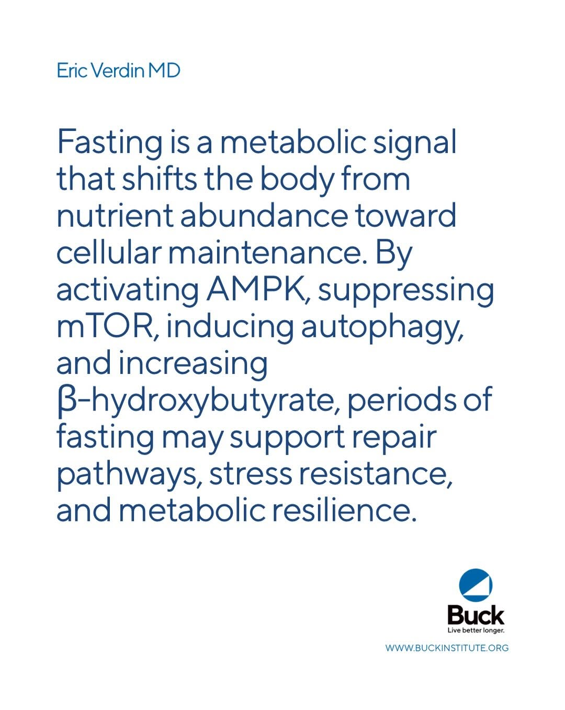

AI summary & key facts
Louis notes fasting extends lifespan and reduces disease risk in animals, with rodent lifespan gains of 30-40%, but that translation to humans is unknown and needs controlled trials. At minimum he sees it as a tool for fat loss. The shared Eric Verdin post explains AMPK, mTOR, autophagy and ketones, and lists cautions.
- Rodent lifespan extensions of 30-40% with fasting
- Mechanisms: AMPK up, mTOR down, autophagy, beta-hydroxybutyrate
- Approaches: 16:8, 5:2, fasting-mimicking diets, supervised longer fasts
- Not suitable with disordered eating history, type 1 diabetes, pregnancy or age-related muscle loss
In animal models, fasting extends lifespan and reduces risk for various diseases. This is especially true in experiments with rodents, where the extensions in lifespan can be as large as 30-40%.
It is still unknown how well this translates to humans. But it is becoming increasingly clear that fasting is promising as a medical intervention, and that it needs to be properly studied in controlled human trials.
At the bare minimum, fasting can be a useful tool for losing fat and controlling weight. This is how I use it myself. The other possible benefits (seen in animal models) are a bonus.
#fastingHD #ampkHD #mtorHD #hormesisHD #autophagyHD #butyrateHD
Fasting is not just eating less. It is a metabolic signal.
When energy runs low, AMPK turns on, mTOR turns down, and the body shifts out of growth mode into maintenance. Autophagy clears damaged proteins and worn-out organelles. β-hydroxybutyrate rises, acting as both fuel and signal for repair and stress resistance.
This is hormesis: a controlled stress that leaves the system more resilient.
In humans, a few approaches hold up, each with tradeoffs: 16:8 daily, 5:2 weekly, fasting-mimicking diets monthly, occasional longer fasts under supervision.
One caveat: fasting is not for everyone. A history of disordered eating, type 1 diabetes, pregnancy, or age-related muscle loss changes the calculus. Talk to your physician first.
The goal was never deprivation. It is metabolic resilience.




